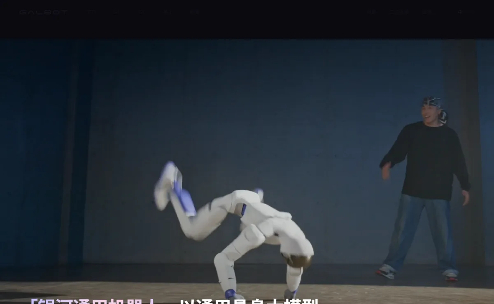
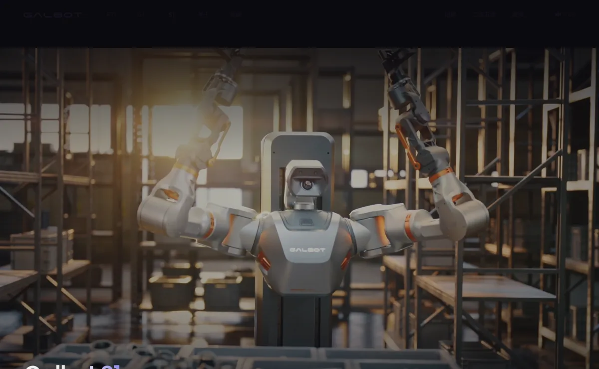
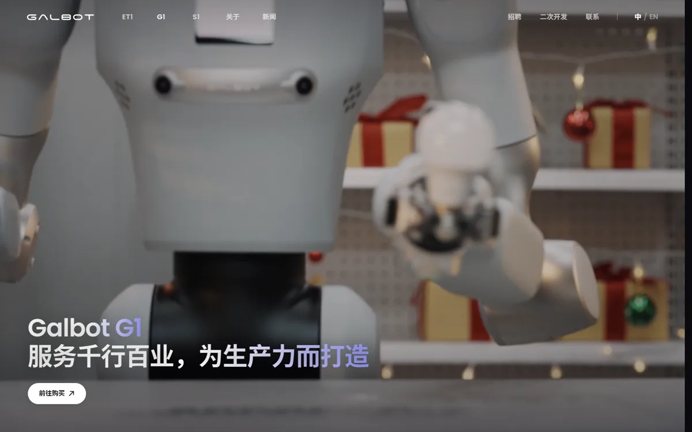

银河通用北京银河通用机器人有限公司（Galbot）
中国融资最多的具身智能公司：成立三年累计融资约 70 亿元、估值超 200 亿元，国家人工智能产业投资基金首次投资具身智能就选了它；核心是“大脑—小脑—神经控制”一体化的银河星脑大模型，机器人先落在药房、便利店、工厂。
一页结论
- 押注“大脑”：自研银河星脑 AstraBrain，称是首个“大脑—小脑—神经控制”一体化的端到端具身大模型；数据以合成仿真为主、真机采集为辅S2S3
- 资本与产业背书最强：投资方包括国家人工智能产业投资基金（大基金三期）、宁德时代、中国移动、中国石化、上汽、美团等S1
- 选择好落地的场景：轮式双臂机器人 Galbot G1 先进入便利店、即时零售仓、药房，S1 重载机器人进入宁德时代产线S1S5S6
- 出货规模远小于估值：媒体推算年出货不到 150 台，与公司“累计订单数千台”的说法差距大，收入未披露S1S2
- IPO 在铺路：2025-11 完成股改，被视作为上市做准备；截至 2026-11-02 未见递表S1
01公司介绍
| 项目 | 内容 |
|---|---|
| 公司 | 北京银河通用机器人，2023-05 成立S1S4 |
| 官网 | galbot.comS3 |
| 创始人 | 王鹤（清华本科、斯坦福博士，北京大学前沿计算研究中心助理教授，创立北大具身感知与交互实验室）；联合创始人姚腾洲（北航机器人所，曾任职 ABB）S2 |
| 融资 | 种子轮（经纬、蓝驰）→ 2024-06 天使轮 7 亿元 → 2024-11 A 轮 5 亿元 → 2025-06 B 轮超 11 亿元（宁德时代领投）→ 2025-12 C 轮 3 亿美元（中国移动领投）→ 2026-03 25 亿元（大基金三期等）S1 |
| 产品 | Galbot G1（轮式双臂通用机器人）、Galbot S1（重载）、ET1、原生智能体机器人“银河星仔”S3S5S6 |

02公司战略
银河通用的路线是“数据集 + 端到端大模型 + 规模化应用”全栈自研，用模型能力而不是硬件规模建立壁垒。
- 全栈自研：百亿级具身数据集（银河星坊 AstraSynth）→ 端到端大模型（银河星脑 AstraBrain）→ 机器人本体S1S2
- 合成数据优先：创始人称 10 万次数据训练成功率只有 58%，10 亿次才能到 87%，单靠人工遥操作采不到这么多数据S2
- 采购他人本体训练：网球演示用的是宇树 G1，2025 年为宇树贡献 1,800 多万元销售额S2
- 从高确定性场景切入：零售、药房、工厂上下料等结构相对固定的场景先做商业闭环S1
03产品定位与产品线
| 产品 | 定位 | 关键参数 |
|---|---|---|
| Galbot G1 | “服务千行百业，为生产力而打造”的轮式双臂通用机器人S5 | 续航 8 小时、自主回充；IP54；操作空间 0–2.4 米；单臂负载 5 kg，末端可换吸盘或夹爪S5 |
| Galbot S1 | 面向工业、仓储、物流的重载机器人S6 | 最高负载 50 kg；触达 0–2.3 米；电池热插拔、24/7 作业；七自由度三指夹爪S6 |
| 银河星仔 | 原生智能体机器人，面向消费者S3 | 2026-09 开启预订S3 |
| ET1 | 新产品线（官网列出）S3 | 本次未核实参数 |

04主要功能与技术路线

05解决方案与场景
06商业模式
| 模式 | 说明 |
|---|---|
| 整机销售 | G1、S1 向企业销售，官网提供“前往购买”入口S5S6 |
| 自营运营 | 银河太空舱便利店、即时零售仓由机器人运营（运营主体与分成模式未公开）S1 |
| 开发者生态 | 二次开发平台S3 |
| 消费产品 | 银河星仔预订S3 |
银河通用未披露收入与毛利。与宇树、智元相比，它更像“模型公司 + 场景运营商”，商业化节奏慢于出货型公司（分析意见）。
07上下游供应链与渠道
08主要客户与落地
09营收与财务
10落地痛点
11近期动态
12潜在风险分析意见
| 风险 | 表现 | 可能程度 |
|---|---|---|
| 商业化兑现 | 收入未披露，出货规模小S2 | 高 |
| 模型路线竞争 | 大厂与 π、Google 等同样做具身基座模型（分析意见） | 中 |
| 估值回调 | 上市时需用财务数据支撑 200 亿元以上估值（分析意见） | 中 |
| 依赖产业资本订单 | 投资方与客户重叠，需求真实性待验证（分析意见） | 中 |
“可能程度”为基于现有公开信息的判断，不是量化预测。
13综合结论分析意见
优势
- 学术团队与模型能力
- 最强资本与产业背书
- 零售场景运营经验
劣势
- 出货规模小
- 收入未披露
- 轮式形态边界
机会
- 药房与零售连锁复制
- 宁德时代等产业客户
- 上市融资
威胁
- 出货型公司的规模优势
- 模型同质化
对 AI 产品团队的启示
- “模型优先”需要场景闭环来证明：便利店、药房这类结构化场景，让模型能力快速变成可运营的服务。
- 数据策略决定成本曲线：合成数据为主、真机为辅，是降低数据成本的一种选择，但需要真实部署来校准。
- 形态服从场景：轮式双臂在室内零售和产线足够用，不必追求双足。
- 融资额不等于商业成功：评估这类公司要看可复制的单店模型和真实交付量。
信息缺口
以下信息未找到可靠的公开来源，本报告不做推测。
- 收入与毛利
- 真实交付量
- 2026-03 融资估值
- 自营网点的单店经济模型
- IPO 时间表
来源
A 官方 · B 权威媒体或第三方 · C 社区（仅用于口碑与线索）。访问日期均为 2026-11-02。
- S1 · B银河通用三年融资70亿估值200亿 大基金宁德时代押注IPO紧追宇树科技新浪财经 · 2026-03-05
- S2 · C融资最多的机器人公司，一年卖出了150台钛媒体（巨潮WAVE） · 2026-06
- S3 · A银河通用官网首页（银河星脑架构、新闻动态）银河通用 · 2026-11-02 访问
- S4 · A关于银河通用（核心技术）银河通用 · 2026-11-02 访问
- S5 · AGalbot G1 产品页银河通用 · 2026-11-02 访问
- S6 · AGalbot S1 产品页银河通用 · 2026-11-02 访问
- S7 · B耗资16亿上演H吃A，优必选补齐制造拼图（提及银河通用与百达精工合作）36 氪（节点AI观） · 2025-12